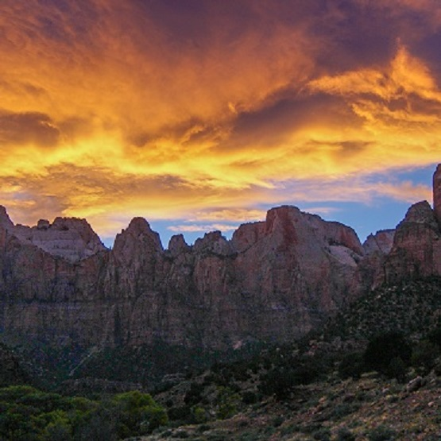

Park Photos
Interested in see more photos of the parks? Click the images below to see a gallery of recents pictures!



Interested in see more photos of the parks? Click the images below to see a gallery of recents pictures!